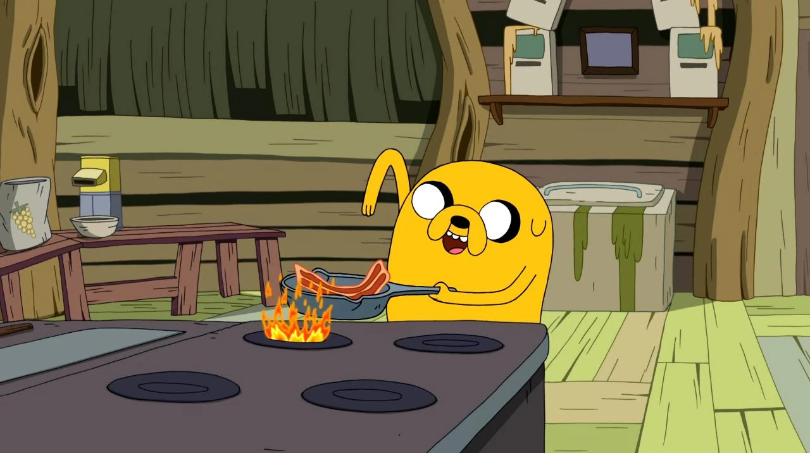

Bacon Pancakes

Description
This is Finn's favorite food of all time!
Cooked by the bestfriend anyone could ever had, and the kingdom's
greatest chef--Jake the Dog
Let it be known that the evil Lich King is trying
to steal the recipe since its inception. Don't fall for the madness!!!
Ingredients
- 1 cup all-purpose flour
- 1 tablespoon sugar
- 1 teaspoon baking powder
- 1/2 teaspoon baking sod
- 1/4 teaspoon salt
- 3/4 cup buttermilk
- 1/4 cup milk
- 1 large egg
- 2 tablespoons melted butter
- Bacon strips (as many as desired)
- Maple syrup for serving
Steps
- Lay out the desired number of bacon strips in a cold skillet.
Cook over medium heat until the bacon is crispy. Remove and place on a paper towel to drain excess grease. Set aside.
- In a large mixing bowl, whisk together the flour, sugar, baking powder, baking soda, and salt.
- In a separate bowl, whisk together the buttermilk, milk, egg, and melted butter.
- Pour the wet ingredients into the dry ingredients.
Gently mix until just combined. It's okay if there are a few lumps; overmixing can make the pancakes tough.
- Heat a griddle or non-stick skillet over medium heat.
Pour 1/4 cup portions of batter onto the griddle for each pancake.
Place a piece of cooked bacon onto each pancake, pressing it slightly into the batter.
- When bubbles start to form on the surface of the pancake and the edges look set, carefully flip the pancake.
Cook until the other side is golden brown and the bacon is crispy.
- Remove the bacon pancakes from the griddle and place them on a serving plate.
Serve with maple syrup for that perfect sweet and savory combination.
- Dig in and enjoy your delicious Adventure Time-inspired bacon pancakes! They're a delightful combination of fluffy pancakes and crispy bacon.
- Feel free to get creative and add your own twists to the recipe. You can try different types of bacon, add chocolate chips, or even sprinkle some chopped nuts on top. Remember, making bacon pancakes is all about having fun in the kitchen!